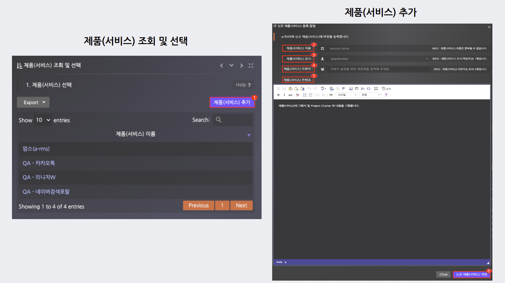
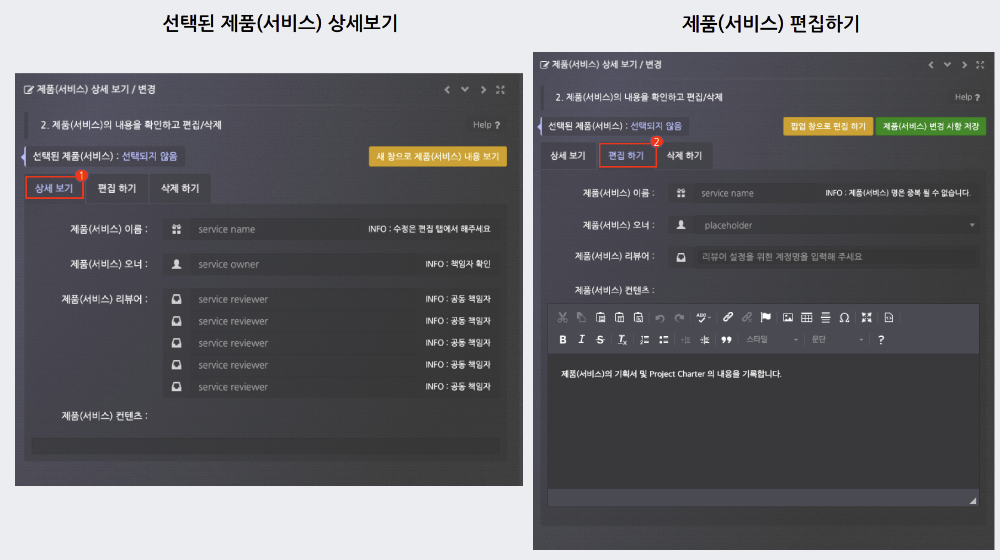
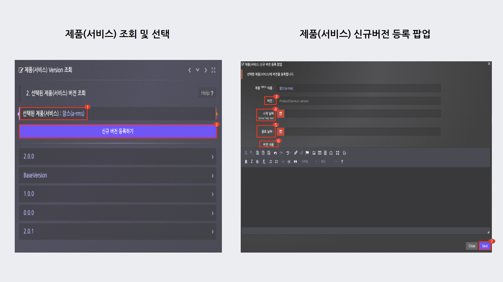
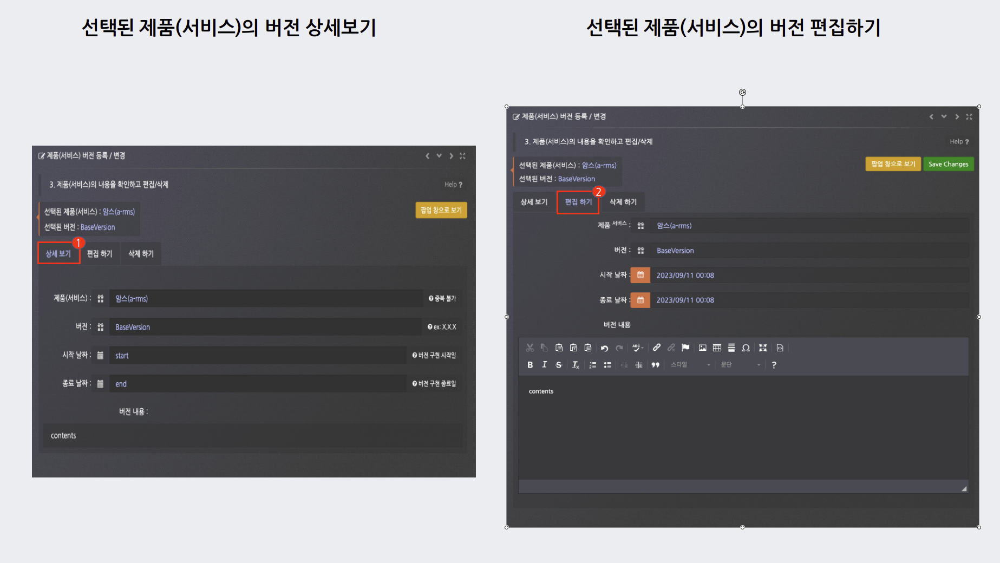
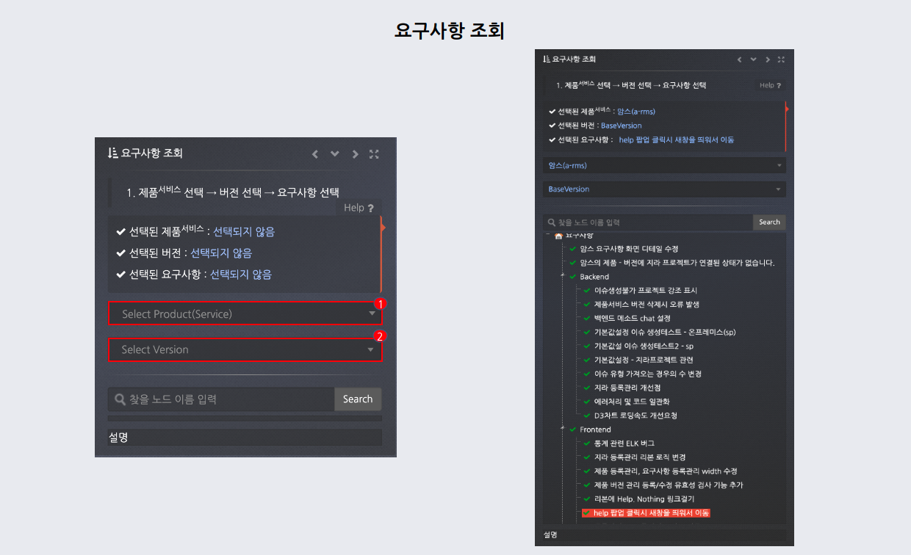
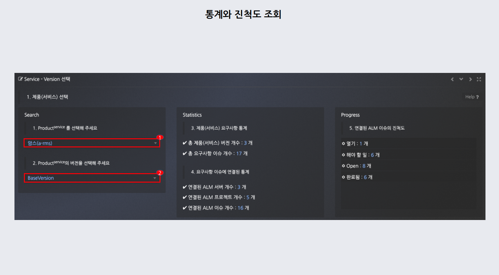

등록관리
1. 제품(서비스) 조회 및 추가 방법

- 등록관리 페이지 접속 후 제품(서비스) 조회 > 제품(서비스) 추가 클릭 합니다.
- 제품(서비스) 이름, 제품(서비스) 오너, 제품(서비스) 리뷰어, 제품(서비스) 컨텐츠를 작성 > 신규 제품(서비스) 저장 클릭합니다.
2. 제품(서비스) 상세 보기 / 편집하는 방법

- 상세보기 탭을 클릭 > 선택된 제품(서비스) 내용을 확인합니다.
- 편집하기 탭을 클릭 > 선택된 제품(서비스) 내용을 편집합니다.
버전관리
1. 제품(서비스) 조회 및 추가 방법

- 버전관리 페이지 접속 후 제품(서비스) 조회합니다.
- 제품(서비스) 등록을 하지 않았다면 제품(서비스)관리로 이동을 클릭합니다.
제품(서비스) Version 조회

- 제품(서비스) 선택시 조회된 제품(서비스)를 확인합니다.
- 버전을 등록하지 않았다면 신규 버전 등록하기를 클릭합니다.
- 등록 팝업에서의 버전, 시작날짜, 종료날짜, 버전 내용을 입력 후 저장합니다.
제품(서비스) 버전 등록 / 변경

- 상세보기 탭을 클릭 > 선택된 제품(서비스)와 버전에 대한 내용을 확인합니다.
- 편집하기 탭을 클릭 > 선택된 제품(서비스)와 버전에 대한 내용을 편집합니다.
연결관리
1. 제품(서비스) 연결된 JIRA 조회

- 제품(서비스), 버전에 연결한 JIRA를 볼 수 있습니다.
- 다운로드 클릭시 > 차트에 해당하는 이미지를 다운로드 합니다.
제품(서비스) 조회 및 선택
1. 제품(서비스) 선택

- 조회할 제품(서비스) 클릭합니다.
- 등록된 제품(서비스)가 없다면 제품(서비스) 관리 버튼 클릭 > 제품(서비스) 등록관리로 이동합니다.
제품(서비스) Version 조회
2. 버전 선택 및 등록

- 조회할 버전을 클릭합니다.
- BaseVersion 외의 등록된 버전이 없다면 버전 관리 버튼 클릭 > 제품(서비스) 버전 관리로 이동합니다.
Jira 리스트
3. 연결할 JIRA 프로젝트 선택

- 제품(서비스), 버전 선택 후 > 연결할 JIRA 프로젝트를 선택
- 오른쪽으로 선택한 JIRA 프로젝트 확인 후 > 연결 등록 버튼 클릭
요구사항 조회
1. 요구사항 조회 방법

- 요구사항 등록관리 페이지 접속 후 제품(서비스), 버전을 클릭합니다.
- 해당 하는 요구사항을 조회하며 선택합니다.
요구사항 내용
1. 요구사항 내용 조회 방법

- 상세보기 탭 > 제품(서비스), 버전에 관한 요구사항의 내용을 상세하게 볼 수있습니다.
- 편집하기 탭 > 요구사항 연관버전, 요구사항 제목, 요구사항 리뷰어, 요구사항 내용, 파일을 변경 후 저장합니다.
현황관리
통계 및 진척도 조회

- 제품(서비스), 버전을 선택합니다.
- 제품(서비스) 요구사항 통계 > 총 제품(서비스) 버전 개수, 총 요구사항 이슈 개수를 표시합니다.
- 요구사항 이슈에 연결된 통계 > 연결된 ALM 서버 개수, 연결된 ALM 프로젝트 개수, 연결된 ALM 이슈 개수를 표시합니다.
- 연결된 ALM 이슈의 진척도 > 열기, 해야할 일, 오픈, 환료된 진척도를 표시합니다.